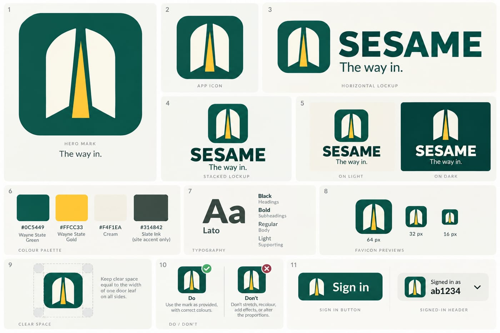

Strongly recommended: a git.wayne.edu instance runner#
git.wayne.edu has no runners today, so CI for this repo runs on the test GitLab instance. Every product in the stack strongly recommends a git.wayne.edu instance runner: one shared runner, one less surprise per pipeline.
The brand board#
The mark, lockups, palette and type.

Same door, every key#
WayneUI and the stack. Each one gets in its own way.


Images are regenerated from the front page by scripts/readme-art. Open sesame.